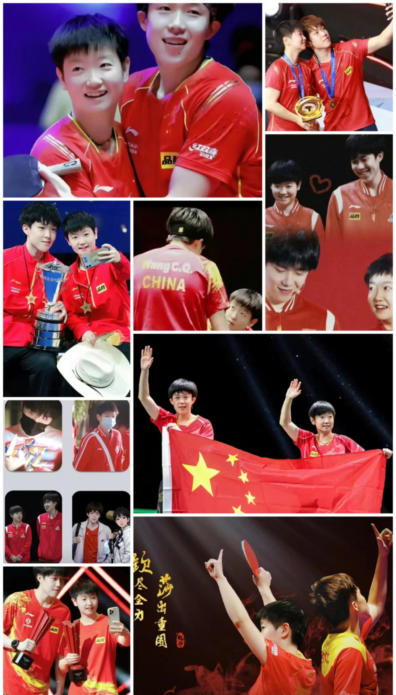

她才不到19岁，却连一点儿少女的生活都没有，每天就是练技术、练身体、看录像。在外界评论孙颖莎技术打法先进所以能够驰骋世界乒坛的时候，她清楚地意识到，只有熟悉每一个对手，站在场上才能不慌。她知道自己要什么，并为之不顾一切，同时她也会在比赛中总结点滴的经验，有信念、有拼劲，也有想法和策略。 （新浪体育评）
孙颖莎确实是这届（2020年东京奥运会）里面最耀眼的一颗新星。虽说女单没有拿冠军，但是在国人的心目中，她的表现早已经超过了冠军的影响力。她靠自己的实力和在场上的表现征服了世界乒坛，我觉得这是非常难得的。孙颖莎这个孩子的内心非常干净，她的性格和打球是一样的，不纠结，很干净。我认为她是新时代的一个偶像、一个榜样，不仅仅是乒乓球的，应该也是属于中国体育界的一颗新星。 （中国乒协主席刘国梁2021年8月7日评）
孙颖莎这次拿了（德班世乒赛）单打冠军，并是一下子就冲上来了，她经过了几年的冲击过程。她小的时候就是单纯享受打球，赢了很开心，输了也没什么，调节很快。打到现在，她是真的非常渴望拿到这个冠军了，这个转换其实对她来说是挺难的一件事。在明确了自己对冠军的渴望之后，孙颖莎开始用非常高的标准要求自己，坚持很长一段时间了。特别是她还要兼项，并且拿了两项冠军，非常不容易。（中国乒乓球队总教练李隼2023年评）
孙颖莎是右手横拍快攻结合弧圈打法，技术全面，打法细腻，基本技术结构相对合理，在同年龄中相对突出。（国家体育总局乒乓球羽毛球运动管理中心评）
